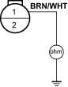

- Remove the condenser fan relay, and test it, refer to the '01 Civic Shop Manual on this CD (see page 22-80).
Is the relay OK?
YES – Go to step 2.
NO – Replace the relay. 
- Disconnect radiator fan switch B 2P connector and turn the ignition switch ON (II).
Does the radiator fan stop?
YES – Replace radiator fan switch B and recheck.
NO – Go to step 3.
- Turn the ignition switch OFF.
- Remove the radiator fan relay from the multi-relay box.
- Check for continuity between radiator fan switch B 2P connector terminal No. 1 and body ground.
RADIATOR FAN MOTOR 2P CONNECTOR

Wire side of female terminals
Is there continuity?
YES – Repair a short in the wire between radiator fan relay 4P socket terminal No. 4, radiator fan switch B 2P connector terminal No. 1 and A/C pressure switch.
NO – Go to step 6.
- Disconnect the radiator fan switch A 2P connector and turn the ignition switch ON (II).
Does the radiator fan stop?
YES – Replace radiator fan switch A.
NO – Repair a short in the wire between radiator fan relay 4P socket terminal No. 4, condenser fan relay 4P socket terminal No. 4.
- Remove the radiator fan relay from the multi-relay box and condenser fan relay from the under-hood fuse/relay box.
- Disconnect the radiator fan switch B 2P connector.
- Turn the ignition switch ON (II).
- Measure the voltage between radiator fan switch B 2P connector terminal No. 1 and body ground.
RADIATOR FAN SWITCH B 2P CONNECTOR

Wire side of female terminals
Is there the battery voltage?
YES – Go to step 5.
NO – Repair an open in the wire between fan control relay 5P socket terminal No. 1 and radiator fan switch B terminal No. 1.
- Install the radiator fan relay and condenser fan relay.